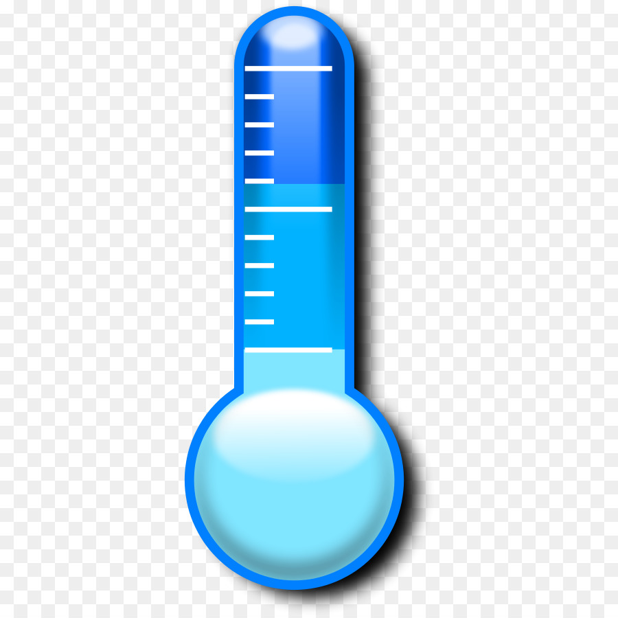
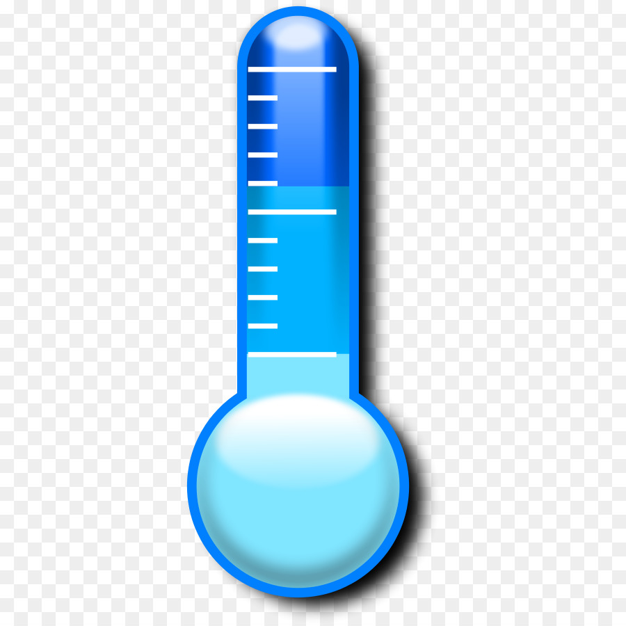

Cambiar atributos
Cambiando los valores de los atributos podemos interactuar con la página
En este caso, cambiamos la fuente de la imagen
Cambiando los valores de los atributos podemos interactuar con la página
En este caso, cambiamos la fuente de la imagen
